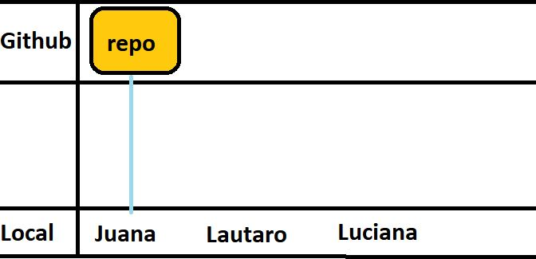
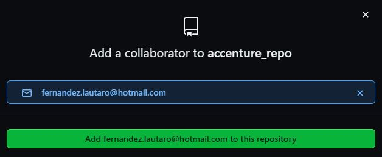
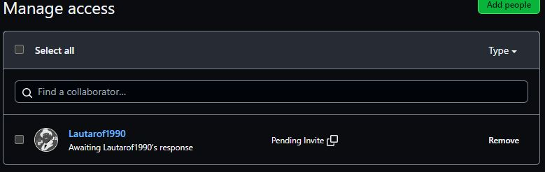
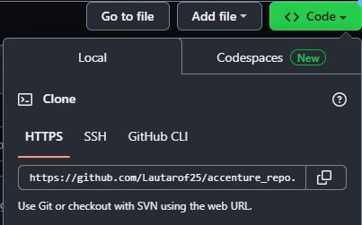

- Instalar Git
- En la instalación, integrar git con VS code (1º opción que aparezca con VS code)

- Registro en Github
Github y Firebase
Mis proyectos en la nube
Pasos necesarios y únicos:
Más información...
Proyecto local a nube
Más información...
Estuve trabajando de manera local con mi proyecto, ahora quiero subirlo a github...
Pasos para subir el proyecto:
- Crear repositorio en Github y ...
- Copiar el código del recuadro donde hay varias lineas de código (similar a este)
- Abrir el proyecto en VS code
- Abrir terminal
- Configuración global de git (Paso único)
-
git config user.name "nombreUsuarioGithub" -
git config user.email "email@email.com"
-
- Pegar el código copiado en el paso nº 1(solo una vez por proyecto)
- Subir el proyecto local con los siguientes comandos
-
git add . -
git commit -m "subiendo proyecto local" -
git push -u origin main
-
- Repetir paso nº 6
-
git add . -
git commit -m "modificando header" -
git push -u origin main
-
Codigo ejemplo
echo "# nombreProyecto" >> README.md
git init
git add README.md
git commit -m "first commit"
git branch -M main
git remote add origin https://github.com/UsuarioGit/nombreProyecto.git
git push -u origin main
Actualizar cambios en el repositorio
Otros Comandos
Más información...
Saber si el proyecto local está vinculado al repositorio de github
git remote -v
Aparecerán 2 lineas de código, una con (fetch) y otra con (push)
origin https://github.com/usuario/repo.git (fetch)
origin https://github.com/usuario/repo.git (push)
Desvincular proyecto de github
git remote remove nombreRemoto
Otra forma es borrar la carpeta oculta ".git" dentro de la carpeta local
Saber estado de los archivos
git status
Los archivos pueden aparecer en color rojo(sin stage) y en verde(en stage)
modified: cv_online/index.html
Después de hacer un git add .
modified: cv_online/index.html
Saber en qué rama estas parado
git branch --list
Aparecerá un asterisco * en la rama actual
* main
Crear una rama
git branch nombreRamaNueva
Sirve cuando queremos crear una nueva funcionalidad sin afectar la rama principal
Pararse en otra rama
git checkout nombreRama
Modificar rama
git branch -M nuevoNombre
Se necesita estar parado sobre la rama a modificar
Eliminar rama
git branch -D nombreRama
Unir ramas
Debemos estar parados en la rama vieja para unir los cambios de la rama nueva
git merge ramaNueva
Conectar local con remoto
git remote add origin urlRemoto
Traer los cambios de un repositorio
git pull origin main
Clonar repositorio
git clone urlDelRepositorio directorio
Trabajar colaborativamente
Más información...
Suponiendo vamos a trabajar de manera colaborativa, un compañero puede crear el repo.
Juana crea la carpeta donde se alojará el proyecto y la vincula con un repo de github en su cuenta.
Ahora, Lautaro quiere trabajar en ese mismo repositorio, tomando los cambios de juana y subiendo los suyos
Juana va a agregar a colaboradores a Lautaro.
Va al repositorio en github > Settings > Collaborators > Add people
Ahí agrega el usuario o mail de Lautaro.
Revisa que el envío está como pendiente.
Una vez acepta, ya puede solicitar cambios
Ahora, Lautaro puede clonar el repo de github en su computadora
Copia la URL del repo de Juana
Y lo pega en su VS code